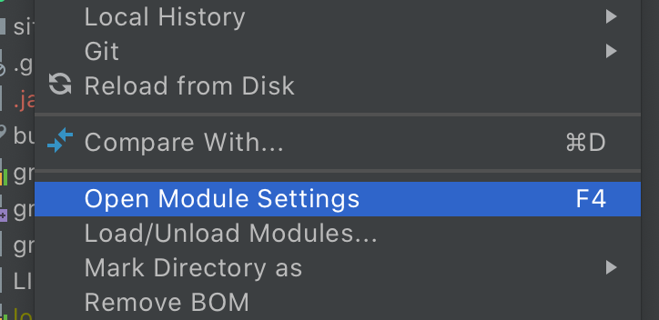

Java Home Mismatch and Multiple Gradle Daemons
Using a different JDK for command line builds vs Android Studio or IntelliJ builds will cause a new Gradle daemon to spawn. This will instantly double the memory being used by Gradle.
To fix this issue, we recommend setting your JAVA_HOME environment variable and then using this JAVA_HOME as the JDK used by Android Studio or IntelliJ.
Set JAVA_HOME
Set JAVA_HOME so that switching between Android Studio and the terminal does not trigger a full rebuild.
To set JAVA_HOME (using bash):
echo \"export JAVA_HOME=${'$'}(/usr/libexec/java_home)\" >> ~/.bash_profile
or ~/.zshrc if using zsh.
Using JAVA_HOME from Android Studio:
To Fix:
-
Open Module Settings (F4) 
-
Click SDK Location
-
Set JDK location to JAVA_HOME

View all Gradle Daemons
jps will print out all the java processes on the system and the process id (pid).
Killing Gradle Daemons
./gradlew --stop will kill all Gradle Daemons with the current Gradle version.
pkill -f '.*GradleDaemon.*' will kill all Gradle Daemons regardless of version.